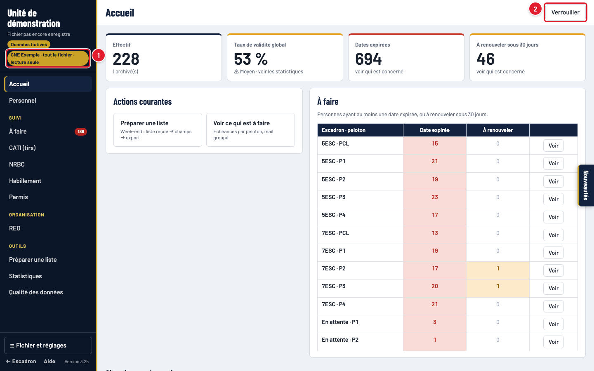
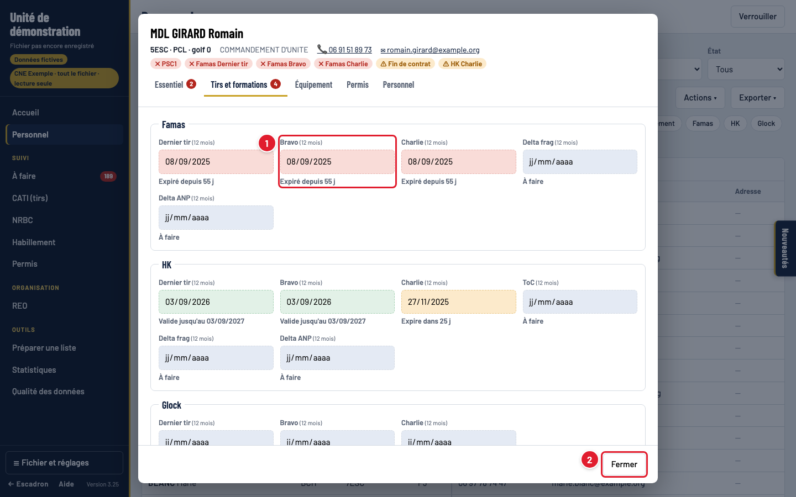
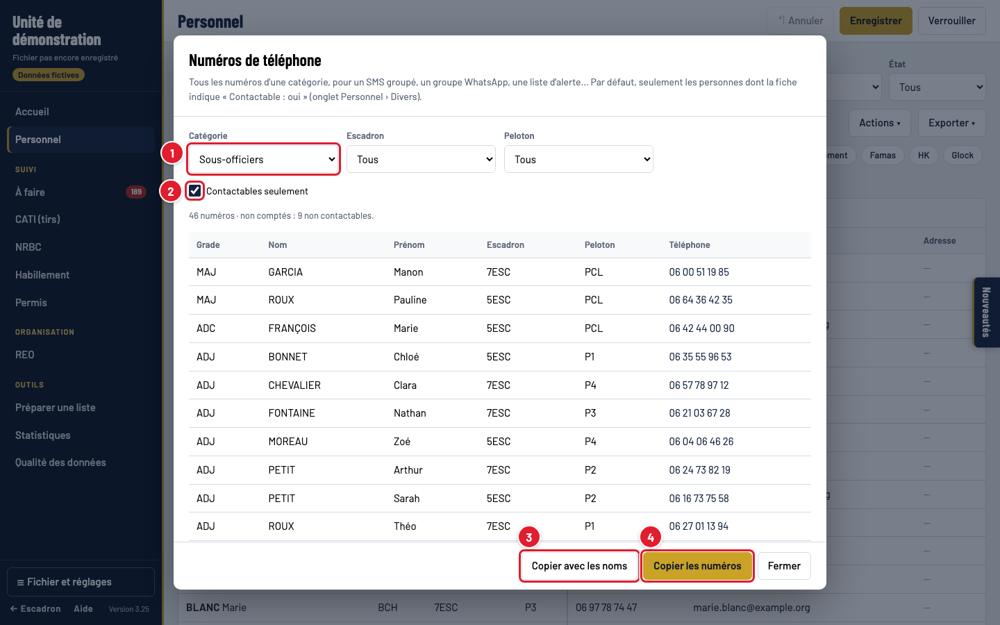

1. Ouvrir le fichier
Le fichier de suivi (.json) est sur le Google Drive. Ouvrez l'outil dans Chrome ou Edge.

- Choisir le fichier… : le fichier de suivi dans le Google Drive.
- Votre mot de passe personnel : il ouvre tout le fichier, en lecture seule.
- Déverrouiller.
2. L'écran principal

- Votre accès : « tout le fichier · lecture seule ». Vous voyez tous les escadrons et pelotons, mais rien ne peut être modifié.
- Pas de bouton « Enregistrer » : seul Verrouiller reste. Vous ne pouvez rien abîmer.
Les chiffres clés en haut de l'accueil (effectif, taux de validité, dates expirées, à renouveler) sont cliquables, comme le tableau « À faire » par peloton.
3. Consulter une personne
Page Personnel : recherchez un nom, filtrez par escadron ou peloton, et cliquez sur une ligne pour ouvrir la fiche.

- Rechercher un nom, un grade, un numéro…
- Escadron et peloton.
- Champ et état : par exemple « Famas Bravo » + « Expiré ».
- Les groupes de colonnes à afficher.
- Cliquez sur une ligne pour ouvrir la fiche.

- Les dates sont affichées mais pas modifiables.
- Fermer.
4. Les couleurs des dates
Pour un tir ou une formation, la date est celle où c'est fait ; l'outil calcule l'échéance (12 mois pour les tirs, le PSC1, le SC1…).
5. Les dates de fin : fin de contrat, VMP
Ces dates-là sont des dates de fin (marquées date limite) : l'alerte se déclenche avant l'échéance.

- Fin de contrat : alerte orange 90 jours avant.
- VMP (fin de validité de la visite médicale) : alerte 60 jours avant.
6. Ce qui est à faire

- Escadron (et peloton).
- Échéance : déjà expirés, ou aussi ce qui expire bientôt.
- Formation : toutes ou une seule.
- Écrire à ces personnes : un mail à toutes les personnes affichées, en copie cachée.
- Qui doit refaire quoi, avec téléphone et mail. Exporter ▾ pour l'imprimer ou l'envoyer.
7. CATI, NRBC, Habillement, Permis

- Escadron, peloton, et Exporter ▾ (une page par peloton à l'impression).
- Chaque golf, chaque arme, en couleur.
NRBC et Habillement donnent les tailles (récapitulatif par peloton) ; Permis : titulaires, éligibles et « à vérifier ».
8. Statistiques

- Escadron et peloton (« Tous » possible).
- Effectif, taux de validité global, dates expirées, à prévoir.
- Par arme et formation : à jour / à prévoir / expiré / jamais fait, statut ✓ Bon (≥ 75 %), ⚠ Moyen (≥ 50 %), ✗ Critique. Plus bas : taux par peloton et évolution mois par mois.
9. Numéros de téléphone
Personnel › Actions ▾ › Numéros de téléphone : par exemple tous les sous-officiers contactables, pour un SMS groupé.

- Officiers, sous-officiers, militaires du rang ou tout le monde (et escadron, peloton).
- Contactables seulement (champ « Contactable : oui » de la fiche).
- Copier avec les noms : une ligne par personne.
- Copier les numéros : à coller dans les destinataires d'un SMS ou d'un groupe.
10. Préparer une liste
Vous avez une liste de noms (mission, stage, week-end) et voulez leurs informations : menu Préparer une liste, collez les noms, cochez les informations voulues, puis exportez. En lecture seule, la liste ne peut pas être enregistrée dans le fichier, mais l'export et l'impression fonctionnent.

- Le nom de la liste.
- Les noms, un par ligne.
- Rechercher ces personnes.
- Ou un fichier Excel.

- (Enregistrer : réservé au secrétariat.)
- Écrire à ces personnes.
- Exporter ▾ › Excel.
- Le tableau en couleur.
11. Exporter et imprimer
Chaque page a un menu Exporter ▾ : Excel mis en forme, ou Imprimer / PDF.
12. Verrouiller, mot de passe, corrections
- Verrouiller en quittant le poste. Après 15 minutes sans activité, l'écran se verrouille tout seul : retapez votre mot de passe pour reprendre.
- Votre mot de passe est personnel : ne le prêtez pas et ne l'écrivez pas dans un mail. Pour le changer, demandez au secrétariat.
- Une erreur dans une fiche ? Signalez-la au secrétariat : vous ne pouvez pas la corriger vous-même.

- Votre mot de passe.
- Reprendre la session.
Suivi du personnel · guide du commandement · images réalisées avec des données fictives.